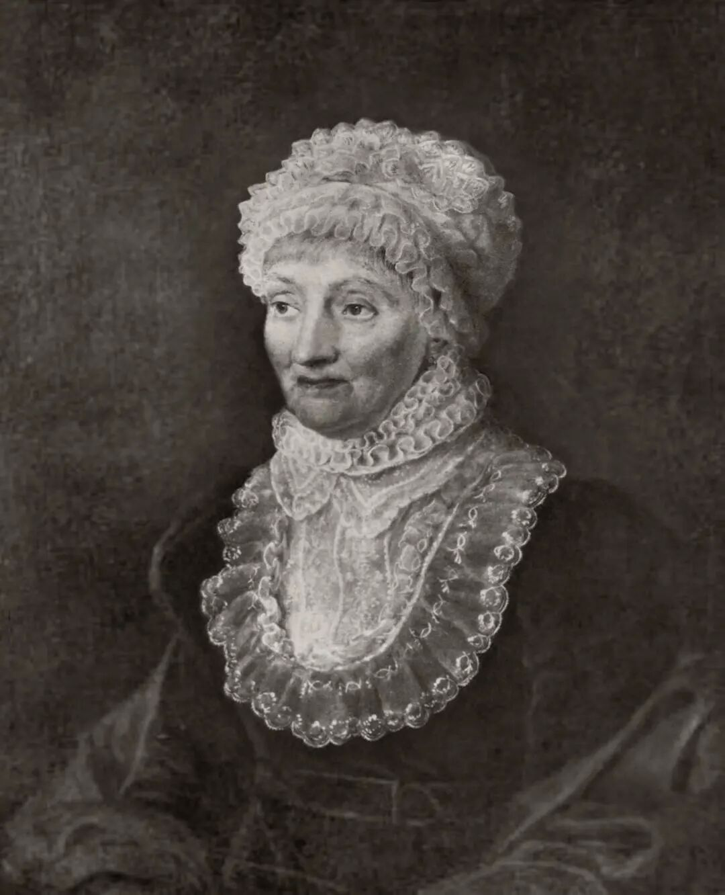
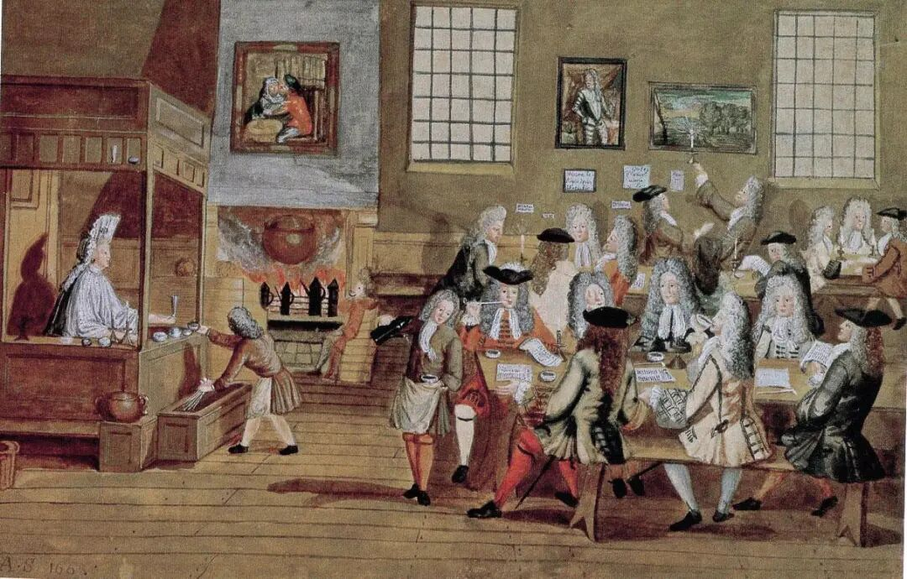
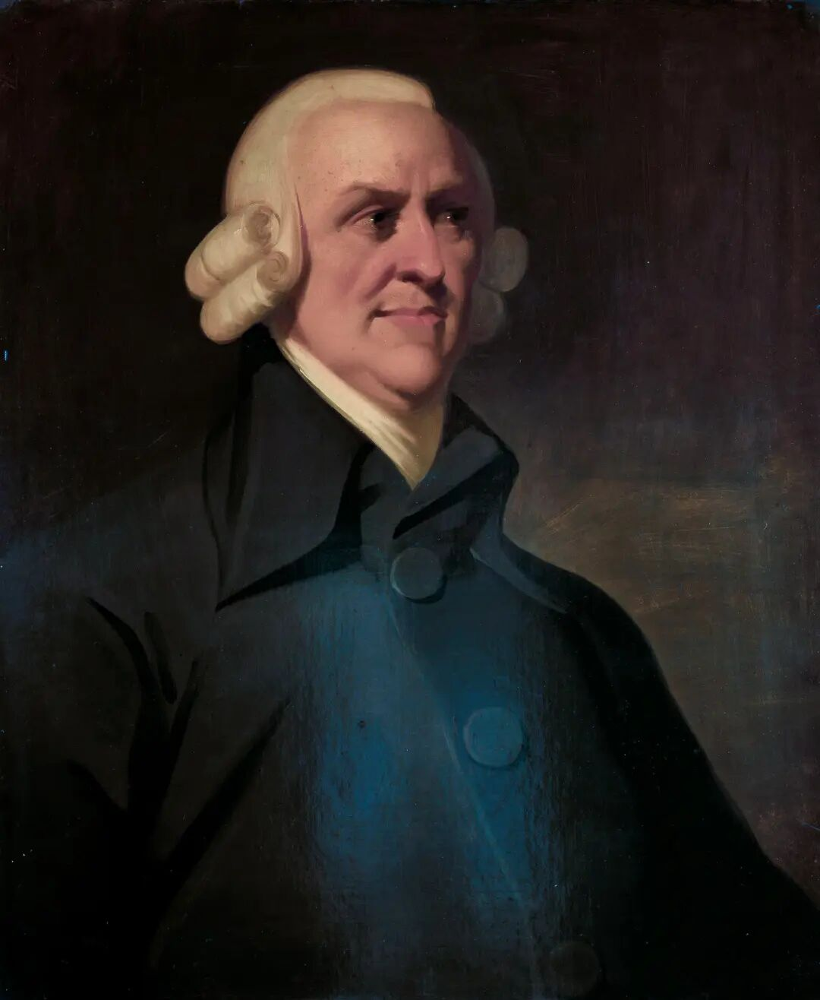
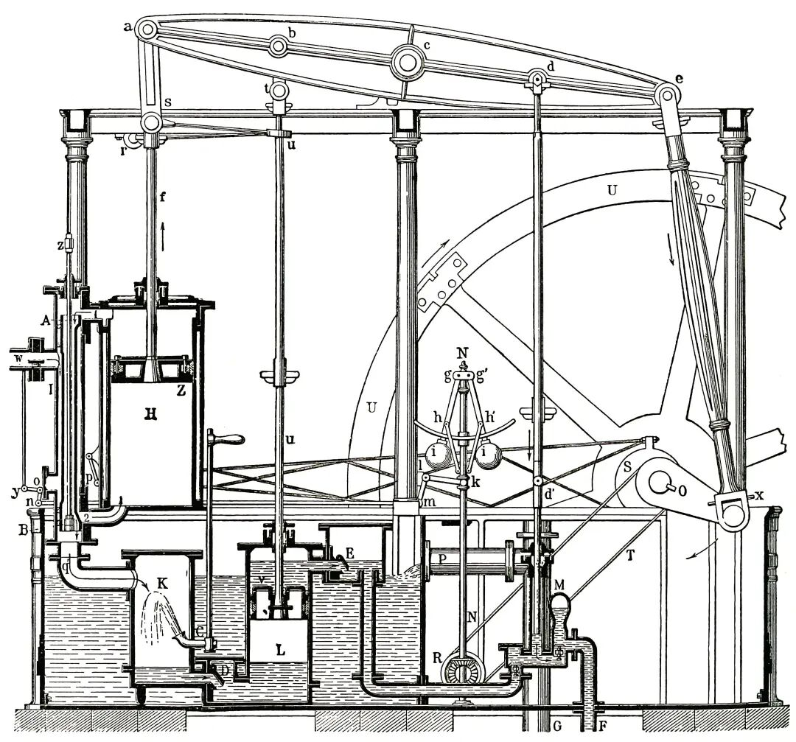

十八世纪以来的英国，正处在从传统社会向现代国家转型的历史进程之中。在此过程中，启蒙思想的浪潮扮演了关键角色。正如乔尔·莫克尔在《启蒙经济》中强调的，要理解工业革命，就必须承认启蒙时代发生的思想巨变。此时的英国社会，人们广泛讨论自由、理性和实证精神，逐渐打破旧有的封建观念和禁锢，追求知识传播和经济自由。这一时期，旅居英国的德国年轻天文学家卡罗琳·赫歇尔，亲历了诸多社会变革。她童年的好奇与成年后的上下求索，与时代对科学、教育和自由职业的重视相呼应。本文将以卡罗琳的视角为切入点，剖析启蒙运动如何在思想、知识和制度等多维度上孕育自由市场、催化工业化、推动改革，从而构建起现代经济的制度框架。
引言
夜晚降临斯劳小镇，卡罗琳·赫歇尔站在望远镜旁，目光专注地观测着天边星光点点。这台牛顿望远镜由她的兄长威廉亲手制作，记录着兄妹二人对天文学的热情。与此同时，伦敦城内，工厂灯火通明，纺织机有节奏地运转，烟囱喷吐着煤烟，工业的节奏敲碎夜晚的静默。

卡罗琳·赫歇尔肖像(1829)
启蒙运动的理性光辉正无时无刻泽福这片土地，旧制度扎根的土壤渐渐松动，财富、权力与知识的价值被重新定，这座城市正在以看得见的速度发生变化，手工生产让位于机械，人口涌入城镇，经济结构开始重组。乔尔·莫克尔在《启蒙经济》一书中写道：“只要启蒙运动盛行于一个国家，它必将播撒下经济进步的种子；而英国的土壤被证明最为肥沃，经济进步的种子率先在英国这块土地上发芽。”这个时代“有用的知识”播撒在社会各处，在实验室、工厂和学术讲堂之间生根发芽，最终汇聚成一股改变世界的力量。
思想重构：从重商主义到自由市场的兴起
卡罗琳在伦敦的咖啡馆中，目睹了18世纪英国公共领域的典型场景。约翰逊编纂的《英文词典》将咖啡馆定义为“出售咖啡并提供报纸的娱乐场所”，这些空间以开放式大厅和长桌布局为标志，消解了阶层界限。贵族、商人与织工围坐同一张长桌，共享《每日新闻》的朗读声；不识字的织工通过聆听报纸朗读，得以参与行会垄断与技术传播的讨论；曼彻斯特的咖啡馆内，报纸的自由贸易专栏常引发热烈讨论。这种自下而上的交流呼应了哈贝马斯所述的“公共意见形成”机制，不同的观点得以碰撞、激荡、交融，从而孕育出新的观念和思潮。
对卡罗琳而言，咖啡馆的长桌不仅是物理空间，更是“温和的中产阶级式启蒙”的象征。当她观察到煤炭商人依据报纸行情调整运输路线，或织工在墙报张贴反对行会垄断的请愿书时，她深刻地意识到，旧秩序正通过公共讨论逐步瓦解，自由辩论孕育的新观念使得公众在咖啡馆中被启蒙。

17世纪伦敦咖啡馆室内场景
重商主义的束缚
在启蒙时代理性思潮涌动的背景下，18世纪初期英国的重商主义体制却仍顽固地维持着对经济的严密控制。这种诞生于都铎王朝时期的经济模式，虽曾推动英国商业资本积累，但在新的时代浪潮下，其弊端日益凸显。
都铎王朝时期形成的全面干预传统，使国家权力渗透到经济与社会的各个角落。国家通过特许公司制度垄断海外贸易，如东印度公司、利凡特公司等，对海外商业活动实行严格控制。这种“零和博弈”式的经济理念，将财富增长寄托于对殖民地资源掠夺和贸易顺差维持。
随着市场经济发展和启蒙思想传播，重商主义的矛盾愈发尖锐。兴商业阶层和乡绅崛起，他们深受启蒙运动影响，渴望打破特许公司垄断，追求经济自由。光荣革命后，尽管英国通过关税等间接手段调整重商政策，但特许公司制度、贸易保护主义等传统重商主义残余，仍阻碍着资本自由流动和市场活力释放。这种体制与启蒙时代倡导的自由市场经济理念的冲突，使得英国经济在18世纪中叶面临转型压力，向自由市场经济的转变成为历史必然。
自由市场思想的崛起
18世纪以来，英国经济发展伴随着制度结构的深刻调整。启蒙运动带来的自由政治经济理念，逐渐取代重商主义，成为政策调整的重要依据。亚当·斯密在《国富论》中提出“看不见的手”理论，主张市场机制能够自发调节经济活动、实现资源有效配置，同时倡导分工提高生产效率与自由贸易原则。这一思想体系，不仅影响英国，也波及欧洲大陆和美利坚联邦，被誉为“启蒙运动最重要的经济文献”。
英国《谷物法》从1815年颁布到1846年废除，成为自由市场思想与重商主义传统碰撞的缩影。该法本是拿破仑战争后英国为保障粮食安全、延续重商主义保护贸易的产物，却因限制谷物进口推高粮价，抬升了工人的生活成本，进而推高工资水平，压缩工业利润，引发工业资产阶级和工人阶级不满。李嘉图的比较优势理论进一步论证自由贸易对国家整体福利的提升作用，为废除《谷物法》提供依据。

亚当·斯密“缪尔肖像”(约1800)
《谷物法》的废除是自由贸易进程的里程碑，推动英国废除《航海条例》、实施减税、开放资本市场等政策调整。经济自由的实现需要建立在法治的基础之上，并且要以资源配置效率为核心。英国在自由市场思想指引下优化经济制度，为经济发展奠定基础。
知识革命：实证科学与工业生产的融合
在卡罗琳·赫歇尔看来，天文学与工业时代的技术改良，本质上遵循着相似的方法：观察、记录、实验，再不断修正。当她透过目镜追寻星云分布的奥秘时，远在英格兰北方，约克郡的矿脉图也正借助相似的观测与描摹方法缓缓成型。两者虽分属天与地，却共享着同一种基于实证的探索精神。人们相信，世界并非不可知，而是能够通过观察与实验被理解、被改造。
那个年代，女性鲜少能走进实验室，更遑论仰望星空、洞悉宇宙的轨迹，而卡罗琳偏偏固执。每当夜幕笼罩大地，她便一头扎进自制的牛顿望远镜，去追逐“属于她”的那颗彗星。
1786年，她借助兄长威廉·赫歇尔为其制作的望远镜，首次发现一颗彗星，成为历史上第一位发现彗星的女性。此后，她又陆续发现多颗彗星，在长期被男性主导的科学世界中，留下了属于自己的名字。
启蒙科学的实用主义精神
18世纪的启蒙运动不仅是一场哲学思潮的解放，更是一场关于“知识为什么存在、应当服务于谁”的观念革命。过去，科学多半停留于经院哲学式的玄思中，追逐形而上的宇宙奥义。而随着近代科学的发展，人们开始更加重视知识的现实作用。弗朗西斯·培根提出“知识即力量”，强调科学应服务于人类社会，这一观念深刻影响了启蒙时代的知识体系。启蒙思想家由此逐渐将科学从纯粹的哲学讨论中拉回现实世界，使其成为改造自然、推动生产与促进经济发展的重要力量。
在这种背景下，启蒙时期兴起了“有用知识”的观念，即知识不仅需要被理解，更应能够改善物质生活、提高生产效率。这一理念进一步推动了工业启蒙运动的发展。狄德罗主编的《百科全书》便是这一潮流的典范，它不仅汇集哲学论辩，更广泛收录机械图纸、工艺流程、矿石处理方法等技术资料，成为工匠、矿工、商人与学者共享的实用知识库。
在这一启蒙氛围中，卡罗琳年少时随兄长接受数学教育，她所学的理性分析方法和严谨态度正是这一时代对知识新的追求的体现。
启蒙知识改变经济现实
启蒙运动使科学不再是宫廷装饰或学者余兴，而逐渐渗透到产业实践中，为农业、手工业、矿业等传统部门注入技术动能，让知识从理论变成了实实在在的财富。
在农业上，过去耕作方法主要靠经验和口口相传。但到了18世纪，启蒙实用知识的理念兴起，农业知识被写进书、办成展览、成立农学社团，像诺福克轮作法这种科学耕种方式被推广开来。它通过轮种豆科、麦类和牧草，既能保持土壤肥力，又减少病虫害风险，让农作物产量和质量双提升。
与此同时，圈地运动把零碎的农地集中起来，建成大农场，地主把地租给佃农，由其进行更集中、市场化的农业经营。这不仅提升了土地利用效率，圈地运动在提高农业效率的同时，也加速了农村人口流动，为工业化时期的城市劳动力供给提供了条件。
工业领域更是如此。蒸汽机的改良，就是启蒙科学变经济动力的典型例子。最早的纽科门蒸汽机效率很低，瓦特借助“潜热”理论，改进设计出独立冷凝器，大幅提高了蒸汽机的燃料效率。到19世纪已成为矿井、纺织厂、钢铁厂的主要动力来源。

瓦特低压蒸汽机示意图
纺织业的革新也因科学启蒙而腾飞。1769年，阿克莱特发明水力纺纱机，1779年，克朗普顿发明骡机，1785年卡特赖特改进动力织机，这些机械不断提高生产效率，降低布料价格，刺激了内需外贸，成为英国经济扩张的物资支柱。
化学工业同样受益匪浅。普利斯特里发现氧气，拉瓦锡改写燃素说，建立现代化学体系，新理论随即应用到炼铁、漂白、制药领域。1783年，科特发明搅拌炼铁法，让炼铁产量暴增五倍。1789年，贝托莱发明氯漂法，将棉布漂白时间从几个月缩短至几天。这些革新让产品更便宜、供给更多，直接带动了整体经济增长。
正如《启蒙经济》一书中所说：“英国启蒙运动创造了一种意识形态环境，推动技术进步达到前所未有的高度。”当科学方法渗入生产过程，技术进步便不再靠偶然，而成了可持续推动经济的发动机。
制度转型：传统秩序的瓦解与重构
在斯劳与伦敦之间的往返途中，卡罗琳·赫歇尔渐渐察觉到这片土地正在发生着的变化。道路上的货车与行人比过去更加频繁，沿途新建的工坊、矿场与仓库不断出现，越来越多人被卷入新的商业与生产体系之中。曾经守着手艺度日的织匠和铁匠，如今纷纷涌入工厂与矿井，追寻新的生计。封建制度的松动与行会垄断的衰退，悄然改变着人们的命运走向。这座岛屿正从一个依赖旧秩序维系的国度，转向以市场、劳动力和自由竞争为原则的社会结构。制度的裂缝，为工业经济腾挪出新的空间。
封建制度与行会的束缚
18世纪的英国，虽然经济在发展，但封建特权依然顽固存在。大面积土地集中在少数贵族手中，比如诺福克公爵一家就拥有40多万英亩土地。这种土地垄断，不仅阻碍了农业高效经营，也让小农民失去了生存空间。虽然1700年至1850年间，议会通过了数千项圈地法案，提高了农业产出，但也迫使大批农民失去土地，涌入城市谋生，社会压力巨大。
与此同时，城市经济亦被行会制度层层钳制。行会通过规定学徒资格、收取高额费用以及垄断作坊开设权，遏制了技术流通与劳动力自由。譬如，纺织学徒须支付26克朗注册费和20居尔登学费，几乎等于普通男仆两年多的收入。全英手工业者必须完成至少七年的正规学徒训练才能独立执业，但至18世纪末，已有三成从业者通过乡村学徒或非法作坊入行，行会权威逐渐式微。
启蒙思想对制度的冲击
启蒙运动的理性批判精神，对旧制度体系发起了有力冲击。亚当・斯密在《国富论》中犀利批判人为制造垄断的行文，阻碍经济发展；边沁及功利主义学派则倡导废除定居法，主张通过劳动力自由流动实现资源优化配置。1814年，英国议会废除了《工匠法令》中关于强制七年学徒制的条款，标志着传统行会制度的重要松动，也为非行会家庭出身的技术人才提供了更多进入工业领域的机会。
工业革命的浪潮进一步加速了制度革新。1733年，约翰·凯发明飞梭，尽管当时专利制度不完善，其专利权未能得到充分保障，却成功掀起纺织业效率革命。1779年，塞缪尔·克朗普顿历经四年研制出骡机，因专利保护不足陷入困境，最终在1792年获得议会补偿认可。1781年，瓦特改良蒸汽机，通过行星齿轮系统实现往复运动转化，显著提升热效率,为工业生产提供了新的强大动力。
随着工业扩张，英国的工会制度与行业规制也发生了变化。1824年，英国废除《结社法》，放宽了对工人结社和行业竞争的限制，随后又在1825年通过新法进行补充规范，说明这一过程并非一蹴而就，而是在放松管制与重新约束之间不断调整。到19世纪中叶，行会身份门槛逐渐瓦解，行业准入更强调基本技能而非出身限制，传统身份壁垒随之削弱。
现代秩序的生成：经济自由与国家治理体系重构
宪政与法治的奠基
1689年《权利法案》颁布时，卡罗琳尚未出生，但其确立的“王在法下”原则，标志着英国君主权力受到法律与议会的约束，这种制度环境为其后18世纪科学与文化的发展提供了相对稳定的政治基础。该法案限制王权随意征税、立法的权力，将议会提升为国家治理核心。卡罗琳的兄长威廉·赫歇尔作为乔治三世时期的宫廷天文学家，在王室资助下开展天文观测，但其研究内容主要仍由科学共同体内部逻辑与个人兴趣所主导，而非受到直接制度性干预或严格限制。国王资助其望远镜建造，在一定程度上提供了资源支持，但并不直接规定其具体研究路径或解释框架。
1701年《王位继承法》主要用于确定王位继承顺序并限制天主教徒继承王位，从而进一步巩固议会对王权的制度性约束，并未直接涉及技术人员入籍或行会制度调整。但这一时期英国逐渐形成较为稳定的宪政结构，为后续经济与社会流动创造了相对有利的制度环境。 市场秩序方面，法治理念也开始在金融领域有所体现。1720年《泡沫法案》出台于南海公司泡沫破裂之后，旨在限制股份公司未经授权的设立，以遏制投机与金融泡沫的进一步扩散，其核心目标更偏向风险控制而非现代意义上的投资者保护。这类制度化尝试，在一定程度上反映了当时对金融秩序稳定性的重视，也为后续资本市场规则的演变提供了早期经验。
信用制度与市场信任
启蒙运动强调理性与实证精神，催生了近代信用制度。17世纪末，劳合社等保险组织通过风险共担机制，降低跨洋贸易风险，支撑英国海外商业扩张。18世纪，地方银行迅速兴起，从18世纪中叶开始数量显著增加，到18世纪末已发展至数百家规模，通过发行小额钞票在一定程度上缓解了货币流通不足的问题，为地方工业和小商户提供融资渠道。这种私人契约式金融模式，打破了封建行会对资金的垄断，体现了启蒙运动提倡契约精神。
消除特权与贫穷干预
贫困治理制度同样经历了由启蒙伦理主导的制度转型。随着工业化带来的贫困问题加剧，旧式“施舍式”救济体系因财政压力而濒临崩溃。启蒙思想反对无差别救助，主张以制度化方式激励劳动、规范救济。1834年《济贫法修正案》在全国推行统一标准，将分散的1.5万个教区整合为数百个联合教区，设立济贫院，通过强制劳动、生活严苛等方式限制救济对象范围，避免资源滥用。同时，限制院外普遍救济，规定健全劳动力必须依靠劳动换取生活资料，将“个人责任”理念制度化。贫困救助从慈善施舍转向效率优先、市场导向，既缓解了财政负担，也有效将劳动力导入工业体系，维持了经济结构的稳定运转。
总体来看，18到19世纪英国制度变革，是启蒙思想逐步转化为制度实践的重要阶段。宪政法治保障经济活动的安全性，信用制度促进资本流通与金融创新，贫困治理制度提升劳动力市场化水平。这些制度虽存在争议，却以“理性、自由、进步”为原则，重塑了英国的政治经济环境，成为工业革命持续推进的重要制度保障。
结语
启蒙运动为英国从传统经济向现代国家过渡奠定了多重基础：在思想层面，它倡导自由、竞争和理性；在知识层面，它鼓励实证和创新；在制度层面，它推动了政治民主化、产权保护、契约精神和法治发展；在经济层面，它极大程度上推动了工业化和全球贸易。
在这一大变革的背景下，卡罗琳·赫歇尔的个人命运，也体现启蒙运动赋予知识分子突破界限、重塑世界的勇气。正如史料记载，她不仅是第一位获得科学家薪资的女性，也是英国首位拥有官方科学职位的女性。她从童年受限到晚年获授金质奖章，一步步见证并参与了社会的开化和平权进程。赫歇尔的经历表明，启蒙运动的不仅仅是市场和制度的改革，更是知识与权利的解放。人们常说：一个社会的进步往往在于最被忽视者的崛起，通过卡罗琳的视角，我们看到了启蒙思想如何点燃科学的星空，也照亮了经济现代化的道路。